Claude Chat
Claude Chat is the conversational Claude experience for asking questions, drafting, analysing, summarising, translating and creating reusable outputs. This module shows you when to reach for it, how to give it useful context, and how to use it within Sandvik's guidelines.
Claude can accelerate your work, but you remain responsible for what you enter, approve, share and publish. Follow Sandvik policy, protect sensitive information, and review outputs before relying on them.
This is a standalone, practical tool module focused on one tool. Several tool modules sit alongside it, and in the near future they will be organised into broader learning journeys.
Using Claude Chat day to day, and on agentic, tool-assisted chat. This is not a separate agent you build, but Claude working through multiple steps inside the conversation, using approved context and tools, and continuing from what it finds.
Building and sharing your own agents is covered in the AI Champion Journey.
Claude Chat holds the foundational features of Claude. It is not Claude Code, Cowork or Design. Choosing the right product is the first decision.
At Sandvik these tools work side by side. Match the assistant to the task by weighing cost, the data it needs, and how complex the work is.
Quick drafts, rewrites, summaries and questions where you don't need extra data or deep reasoning.
Work grounded in your own Microsoft content such as Outlook, SharePoint, Teams and other Microsoft 365 sources.
Deeper reasoning, longer documents, multi-step analysis and work where output quality matters most.
There are three ways to use Claude. They share the same account and history, so you can start on one and continue on another.
Download Claude as a desktop app from the internal Company portal.
Install the Claude app on your phone for quick access on the move.
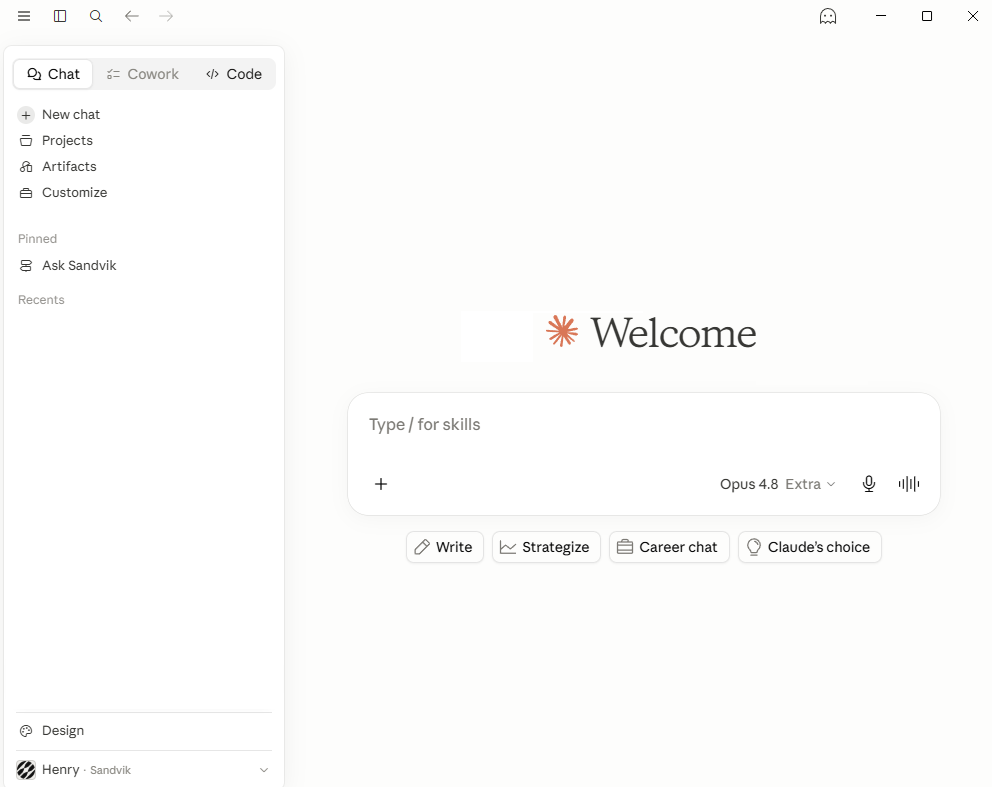
The chat
The large area in the middle is where you work. Type a message in the box to start, and the conversation builds up here as you and Claude exchange turns.
Chat history
The left sidebar keeps your past conversations. Start a New chat at any time, and reopen earlier ones from Recents to pick up where you left off.
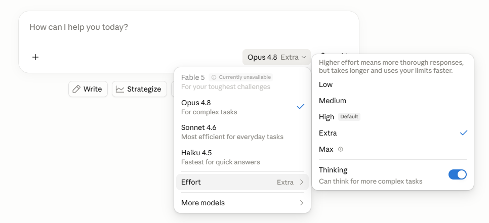
Model selection
The control at the bottom of the message box is where you pick the model and how much effort it puts in. Different models suit different tasks.
The Thinking toggle turns on multi-step reasoning, where Claude works through a problem in steps. It is on by default, and the next page explains it.
With multi-step reasoning, Claude works through a problem in steps before answering, rather than replying the moment you press send. The result is a more considered answer.
It is turned on by default, so you usually don't need to do anything. For harder questions you'll see Claude reason for a moment before it answers.
How it works
A direct answer is a single guess. Multi-step reasoning lets Claude break a problem into parts, work through them, and check itself before replying. It is most useful for analysis, comparisons, planning and anything with several moving parts.
An example
Ask Claude to draft a one-page update and it can plan the work first, then move through it step by step, keeping track of progress inside the conversation.
Files
Files let Claude work with material you provide, such as a policy draft, report, spreadsheet, meeting notes, or specification. Claude can summarise, compare, extract, rewrite, and answer questions about the content.
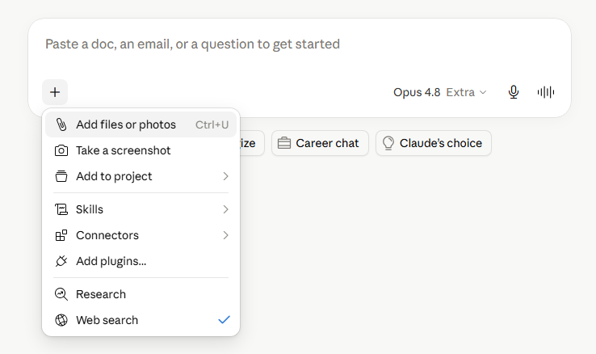
Click the + in the composer and choose Add files or photos, or simply drag and drop files straight into the chat.
Common file types include Word documents, PDFs, and PowerPoint presentations.
Connectors and tool access
Connectors let Claude connect to approved apps and services. A connector may let Claude retrieve data, search a system, or in some cases take actions in that service.
The idea is that connectors bring extra context into Claude Chat without you copying everything by hand. Claude uses the connected service through your login and permissions. If you cannot access a file, channel, record, or repository through your own account, the connector cannot give Claude access to it either.
Add a connector from the Customize tab: open Customize > Connectors, pick a connector, and connect it.
Each connector lists its tool permissions, so you can see exactly what tools it provides and choose when Claude is allowed to use them. You only see tools your organisation has given you access to.
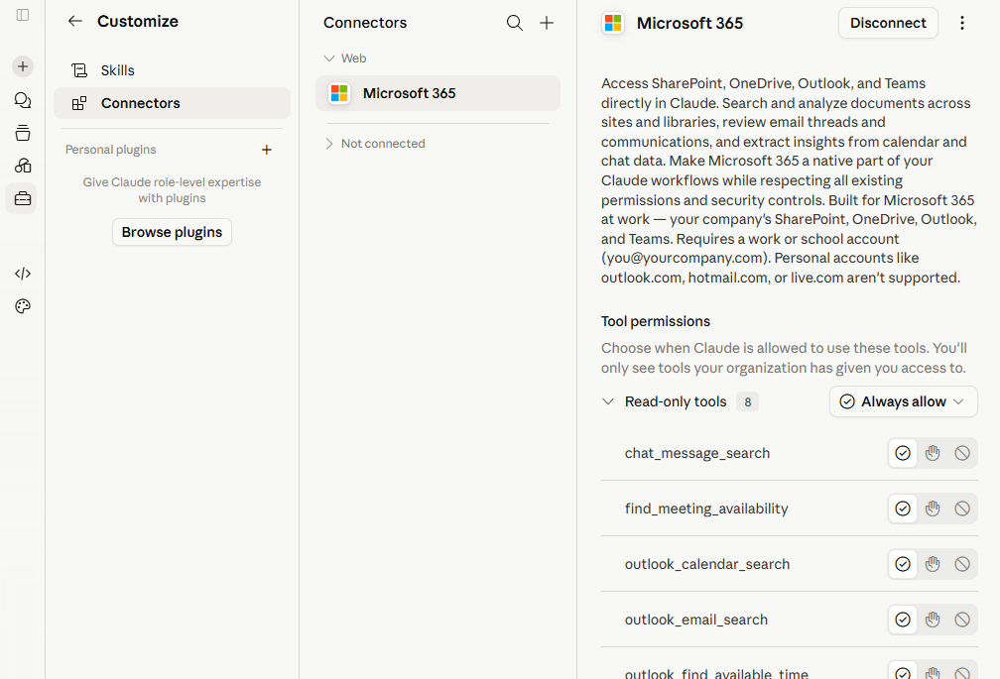
Once connected, the connector appears in the + menu under Connectors, ready to switch on for a chat. Open Tool access there to review its tools at any time.
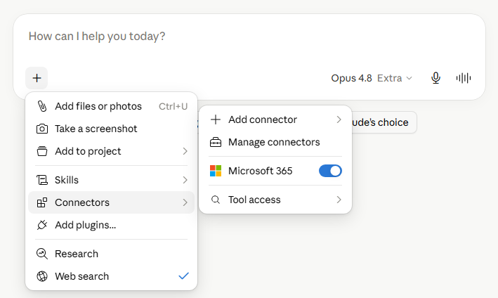
Projects
Projects are focused Claude workspaces with their own chats, project knowledge, and project instructions. Use a project when you will return to the same topic or set of approved materials over time.
Open Projects from the left side panel, then create a new project or pick an existing one.
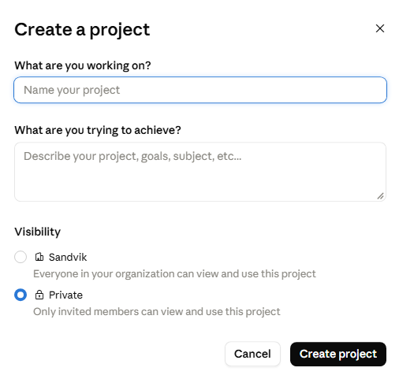
Name the project and describe what you are trying to achieve, then set Visibility before you create it.
Choose Private. The Sandvik option makes the project, its knowledge and its chats visible to the whole Sandvik organisation.
Once it is private, share it individually with the specific people who should have access.
Once created, each project looks like this.
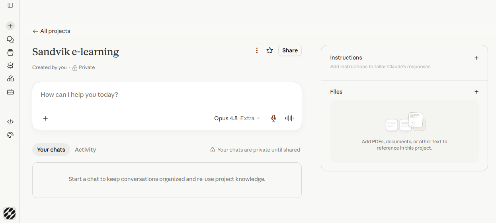
Skills
Skills are reusable packages of instructions and resources that Claude loads when relevant to a task. A skill can hold things like templates, reference guidelines, and scripts, so Claude performs specialised work the same way every time.
Find your skills under Customize > Skills. They come in two kinds:
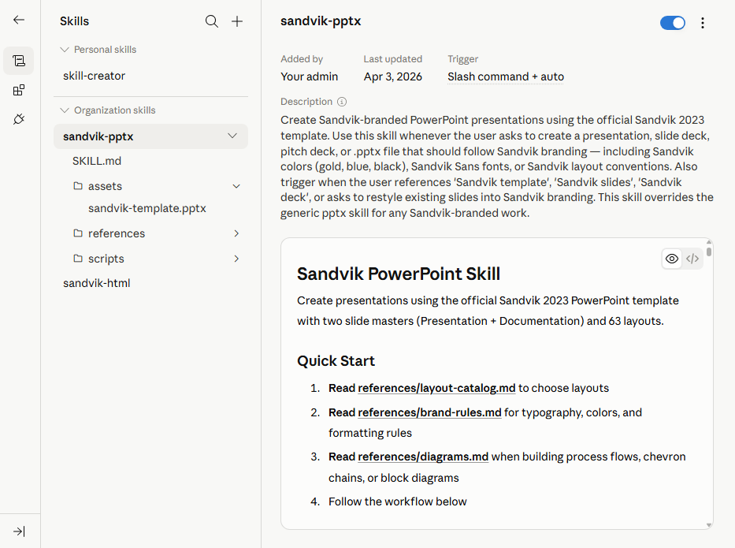
Claude recognises when a skill fits the task and applies it on its own. Ask for a Sandvik presentation and Claude picks up the presentation skill without you naming it.
You can also invoke a skill on purpose by typing / followed by its name in the message box.
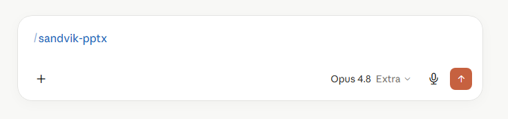
To create a skill in Claude, write /skill-creator. Claude builds a skill that you can decide to save for future use. To share a skill with other people, follow the guidance in the AI Champion Journey.
Artifacts
Artifacts are standalone outputs Claude produces alongside the conversation. They are useful when the result is something you will inspect, edit, download, reuse, or share.
For a steering-group update, an artifact might be a milestone timeline, a process flow diagram, or a risk heatmap that you can refine and drop into your report.
Claude can also build a full interactive dashboard from data you provide. A short prompt like this one is enough to get started:
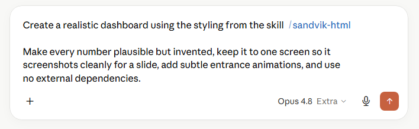
The example below was generated in Claude as a single HTML artifact.
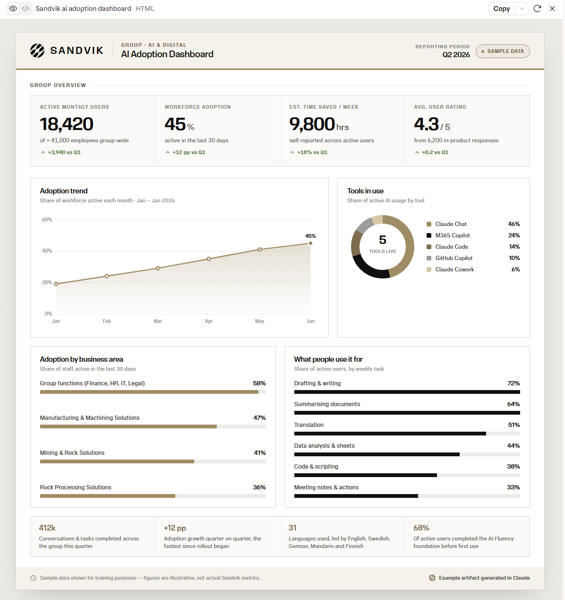
Artifacts can be shared with other people. You can publish one and send a link, so colleagues can view it without opening your chat. Because sharing makes the artifact visible beyond you, check what it exposes and confirm it is cleared before you send it on.
What's allowed, what needs care, and where to go for help and discussion.
Prepare a steering-group update
Apply the workflow to a realistic Sandvik task, then run the review checklist before anything leaves your screen.
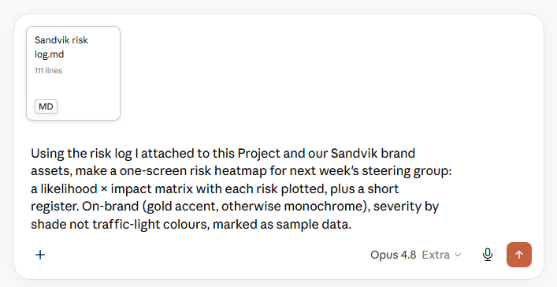
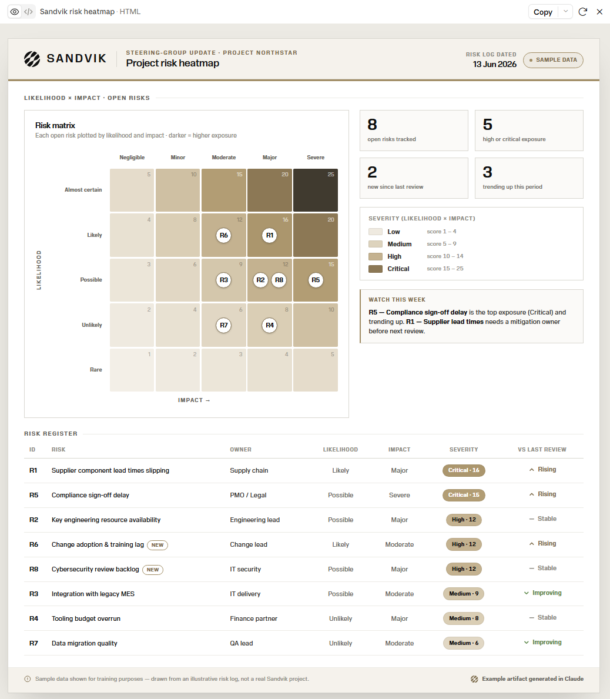
At Sandvik, Claude usage is direct, consumption-based. There are no five-hour session or weekly limits. Every conversation consumes tokens, billed pay-as-you-go to your cost center, so working efficiently keeps both setup time and cost down.
Costs for heavy, context-rich work can rise quickly, so keep an eye on your usage in Settings > Usage and keep conversations scoped.
How much you consume over time. Sandvik usage is billed on a pay-as-you-go basis to your cost center, so the more context Claude works with, the more it costs.
How much material Claude can work with in one conversation. Longer chats and larger inputs fill the context and raise the token cost of every following message.
Usage is not just a count of messages. It can be affected by:
These practices save setup time and reduce unnecessary context, but they do not remove Sandvik cost controls or the need to review Claude's outputs.
Most problems fall into five groups. Each card shows the risk; tap it to flip to the habit that avoids it.
Check what you've learned
A short set of practical decisions about product choice, context, connectors, files, artifacts, usage and accountability. Pick an answer, check it, and read the feedback before moving on.
{{ qPrompt }}
Recap
Choose Chat for the right kind of work, give clear context and boundaries, use the context features deliberately, manage usage and cost, treat artifacts as drafts, verify important outputs, and follow Sandvik policy before sharing or relying on a result.